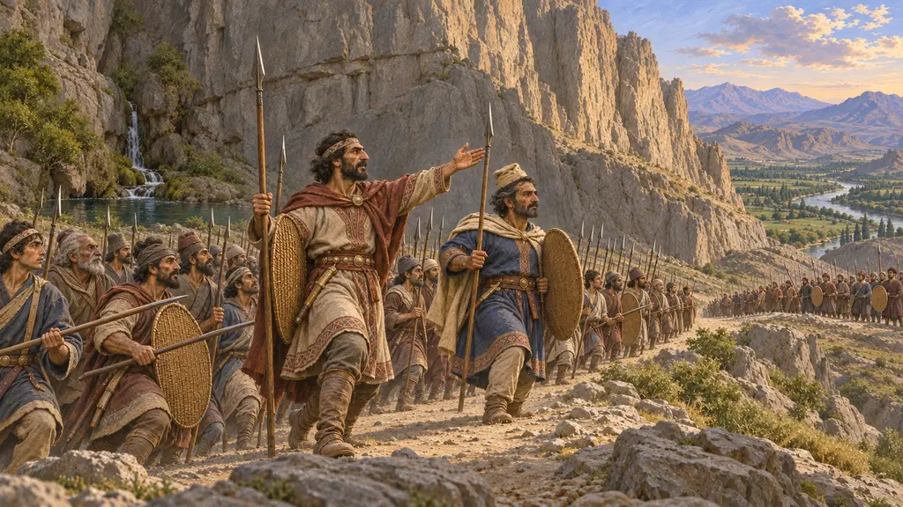
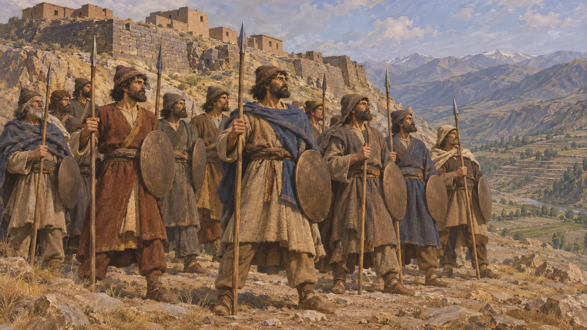
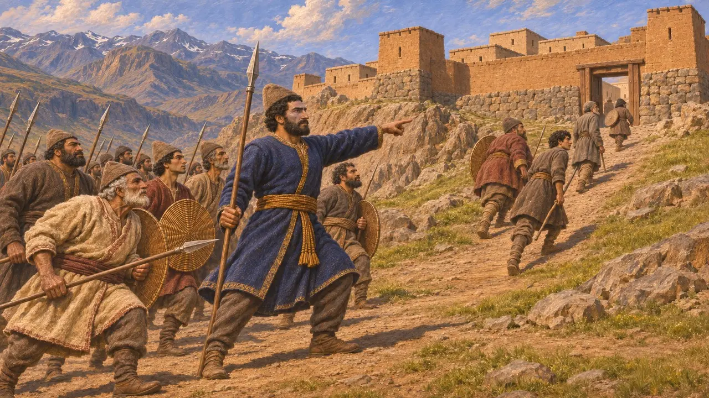
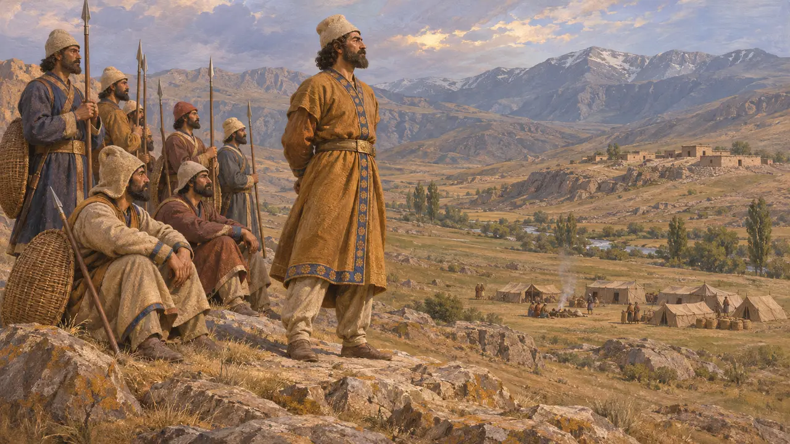
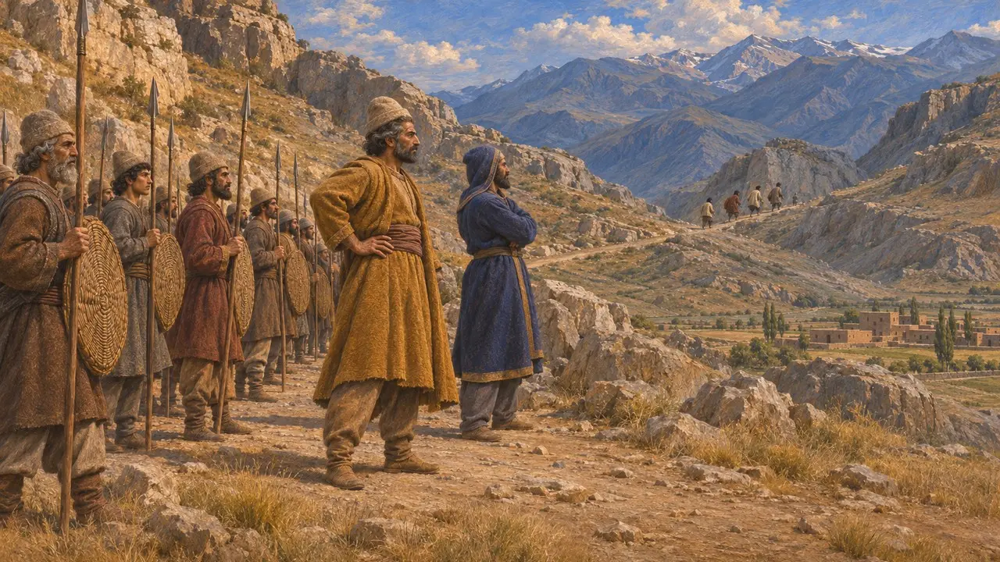
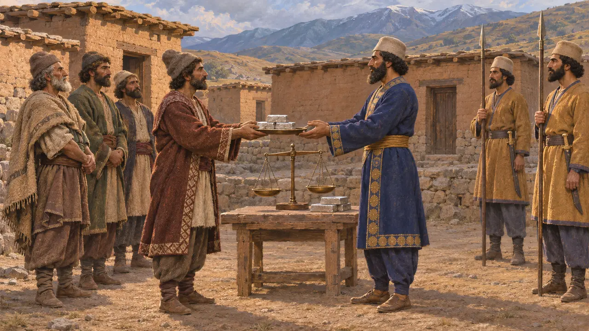

Enciclopédia › Batalhas e eventos

A guerra na Armênia
Os generais de Dario contra os rebeldes armênios, a Armênia e a Assíria, 522-521 AEC
No jogo: Nível 3: A Mentira
A Armênia foi uma das terras que se ergueram contra Dario nos primeiros meses de seu reinado. Sua inscrição em Behistun registra cinco batalhas travadas em seu nome por dois generais, Dadarshish, o Armênio, e Vaumisa, o Persa. É um dos teatros menos conhecidos das revoltas de 522-521, e a inscrição nunca diz que a guerra terminou em vitória clara.
No jogo: O jogo mostra uma campanha de 521 AEC travada batalha após batalha por Dadarshish e Vaumisa, como faz Behistun. Ele simplifica as datas: a primeira batalha de Vaumisa, em Izala, provavelmente ocorreu no final de 522 AEC.

A Armênia entre as terras rebeldes
Nos registrosA Armênia (em persa antigo, Armina) não consta da lista de países rebeldes que Dario apresenta no início de seu relato das revoltas. Ela aparece mais adiante, onde ele fala de rebeldes na Armênia que não queriam chamar-se dele, ao lado da revolta meda de Fravartish. A versão babilônica traz o nome como Urashtu, de Urartu, o reino que um dia governou essas terras altas. Ao contrário da maioria das revoltas, o levante armênio não está ligado a nenhum pretendente nomeado.
DB §21; DB §26; Babylonian version of DB

Dadarshish trava três batalhas
Nos registrosDario diz que enviou Dadarshish, um armênio leal a ele, contra os rebeldes. Dadarshish os enfrentou numa aldeia chamada Zuzahya, depois na fortaleza de Tigra, dez dias mais tarde, e depois na fortaleza de Uyama, no mês seguinte, provavelmente em maio e junho de 521. Em cada ocasião o texto diz que os rebeldes foram derrotados, mas depois disso Dadarshish esperou na Armênia até que Dario chegasse à Média. Ele não é o Dadarshish que, como sátrapa da Báctria, combateu os rebeldes margianos.
DB §§26-28; DB §38

Vaumisa luta contra mais dois
Nos registrosUm segundo general, Vaumisa, o persa, também foi enviado à Armênia. Sua primeira batalha ocorreu em Izala, na Assíria, fora da Armênia propriamente dita, e a segunda em um distrito armênio chamado Autiyara, no fim do mês de Thuravahara. Como Dadarshish, ele então aguardou o Rei na Armênia. Behistun chama mais tarde Arakha, líder da segunda revolta babilônica, de armênio, mas não o relaciona a esta guerra.
DB §§29-30; DB §49

Uma guerra inacabada
DisputadoOs historiadores observam que cinco vitórias relatadas, sem nenhum líder capturado e sem um desfecho declarado, sugerem que os generais não conseguiram pacificar a Armênia por conta própria. Muitos pensam que a revolta foi apenas contida até que Dario estivesse livre para agir, depois de derrotar Fravartish na Média. As datas também são debatidas. Pela cronologia habitual, o combate de Vaumisa em Izala ocorreu por volta da virada de 522-521, antes das batalhas de Dadarshish, e por que ele foi travado na Assíria continua obscuro.
P. Briant, From Cyrus to Alexander, 2002; A. Kuhrt, The Persian Empire, 2007

A Armênia depois das revoltas
Relato antigoOs escritores gregos nada dizem sobre a própria guerra armênia. Heródoto coloca os armênios, com seus vizinhos até o Mar Negro, no décimo terceiro distrito tributário de Dario, pagando 400 talentos de prata por ano. Xenofonte, ao marchar pela região em 401, encontrou a Armênia ocidental sob um governador persa, Tiribazo, o que mostra que a terra permaneceu no império.
Herodotus 3.93; Xenophon, Anabasis 4.4
Fontes
- Darius I, Behistun inscription, DB §§21, 26-30, 49
- R. Schmitt, The Bisitun Inscriptions of Darius the Great: Old Persian Text, 1991
- A. Kuhrt, The Persian Empire: A Corpus of Sources from the Achaemenid Period, 2007
- P. Briant, From Cyrus to Alexander, 2002
- Herodotus 3.93
- Xenophon, Anabasis 4.4